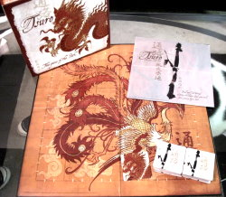
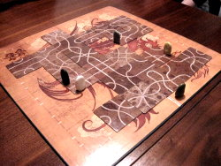
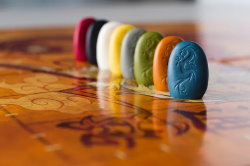

Tsuro is a strategic game that requires some planning and forethought. Tsuro is played by placing tiles on the board and creating paths that your marker will follow. Just be careful though, if the path you or another player makes sends you off the board you have lost.

GAME OBJECTIVE
The game is won if you are the last one to remain on the board.
TILES
There are 35 unique path tiles in Tsuro and each of them contains 4 paths and 8 exit points; Meaning on every tile there will be four white lines. Paths are made by connecting these lines by their endpoints. These tiles are used to fill the game board with paths that the character markers must follow. The paths may cross each other at some points put the path continues with no sharp turns.
HOW TO PLAY
First player begins by placing their marker on one of the ticks at the edge of the board that marks the ends of a path. Then continuing clockwise, each other player will do the same, but no two players can be on the same path edge.

Players turn
Once everyone has placed their marker on the edge of the board the first player can take their first turn. The player taking their turn currently is always called the active player. The active player’s turn has three parts: play a path tile, move the markers, and draw tiles.
Play a Path Tile
The first part of every turn includes playing one of your path tiles in your hand. You take the tile and place it on the board in an open square, but it must be played next to your marker. Tiles can be played in any orientation.
Tiles have a few rules you must follow to place them. They may not be placed in such a way that it would send your marker off the board unless this is your only move, but near the end of the game, this will be a possibility. When a player plays a tile, the tile will not be moved for the rest of the game.
Move the Markers
After a tile is placed you must then move yours and every other marker affected. If any markers are sent off the board, the player that that marker belongs to loses the game. When this happens all the tiles in that player’s hand are shuffled into the draw pile.

Draw Tiles
At the beginning of a game 3 tiles are drawn by the active player. Also after playing a tile, the active player draws a tile to end their turn. This tile becomes part of their hand for their next turn.
Drawing continue until all players have three tiles or the draw pile is empty. There is only one exception to this rule, the dragon tile (see bellow).
Dragon Tile
The tile marked with a dragon comes into play later in the game. It is only given out when a player needs to draw a tile and cannot because the pile is empty. The first player to experience this is given the dragon tile.
When tiles become available later, instead of the active player drawing first, the player with the dragon token sets aside their dragon tile and draws the first tile and then it continues clockwise from them.